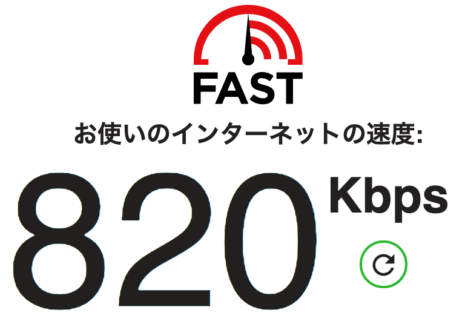

ひっさびさの投稿です。
約、２年前に仕事先が名古屋から東京に変わってから投稿が0件になっていました。特に忙しいっていうわけでもなくなんとなくライフスタイルが変わったというのが大きいんですかね。最後の投稿は、2018年の12月なんで１年ちょっとぶりですね。
さて、リハビリ的なネタとしてはなんでも思いついたことを簡単にアップしてみます。まず、通信環境ネタでもいきましょうか。
今は、約２年前からWiMax にしていて、プロバイダーはカシモWiMaxっていうところを２年契約で使っています。この４月に丸２年経過するので、２年間使ってきた感想なんぞをちょっと書いてみようかと思います。速い時はめっちゃ速いんですよね。でも、遅い時があって今日はその話です。
契約当初の概要は以下のようになっています。
・選択した端末：Speed Wi-Fi NEXT W05
・選択した端末のカラー：ホワイト
・台数：1台
・選択したプラン：ギガ放題プラン
・初期費用（税抜）
端末代金 0円
事務手数料 3,000円
クレードル 3,500円
・月額費用（税抜）
初月（端末発送月）
月額費用 1,380円
合計 1,380円/月
1カ月目
月額費用 1,380円/月
合計 1,380円/月
2〜24カ月目
月額費用 3,580円/月
合計 3,580円/月
25カ月目以降
月額費用 4,079円/月
合計 4,079円/月
そう、２年目以降は値段が上がるんですよね。検討している原因の１つです。
まず、現在の時間帯であります、日曜日から月曜日の深夜０時を回ったところのスピードテストです。

接続先のリフレクターは自動（KDDI Tokyo）ですが、おっそいですよね。金土日はヘビーに使うことが多いので、だいたい３日で10GB の制限に引っかかって、夜間帯（18時〜26時）は通信速度が1Mbps にまで制限されています。夕方６時から夜中の２時までってことです。普通に生活しているとこの時間帯にネットを一番利用するわけですね。ブログを更新しなくなったのはこれも影響しているかもしれません。なんてったって、遅いですからね。ブログ更新する気にもなりません。
公式だとここかな。
▼制限1
前日までの直近3日間で10GB以上ご利用になった場合3日間で10GBを利用されると、次の日はネットワーク混雑時間帯のみ通信速度がおよそ1Mbpsに制限されます。速度制限は、3日間のデータ量が10GBを超えた日の翌日18時頃から翌々日2時頃まで適用となります。つきましては、早朝や日中の時間帯（18～26時以外）は速度は制限されません。また、制限後のおよそ1Mbpsは「利用できない」速度ではなく、YouTubeの標準画質くらいは視聴できる速度となりますのでご安心ください。
https://www.ka-shimo.com/faq/
これは、WiMax 全般に適用されることなのでこのプロバイダーだけということはありません。
YouTube とか、Amazon 系の映画などこの通信速度でも観れますがかなり画面が荒れます。鑑賞するには残念な画質にまでフレームレートが落ちますので実質、動画コンテンツは夜間帯（18時〜26時）で利用できないと思ったほうがいいです。
んで、カシモWiMaxは解約時は以下の制限があります。
【旧2年プランでご契約のお客様】
端末発送月の翌月を1か月目とした24か月間を契約期間とします。端末発送月の翌月を1か月目として、24か月目を「満了月」、25か月目を「更新月」とします。更新月以外の解約は契約解除料が発生します。0か月目～12か月目までのご解約の場合：19,000円（税抜）、13か月目～24か月目までのご解約の場合：14,000円（税抜） 、契約更新月を除く25か月目以降のご解約の場合：9,500円（税抜）となります。
※25か月目の更新月、および26か月目以降は24か月ごとの更新月は、契約解除料は0円です。
今は、もう２年プランというのがないんでしょうかね。まぁとにかくメールで案内が来てくれたので助かっています。このあたりは、優しいですね。
□■━━━━━━━━━━━━━━━━━━━━━━━━━━━━
■ 更新月についてのご案内
□■━━━━━━━━━━━━━━━━━━━━━━━━━━━━
お客様のご契約更新月は2020年4月となっております。
契約解除をご希望される場合、
2020年4月1日～2020年4月20日17:00までにカシモ受付センターまでご連絡ください。
上記期間で解約される場合の契約解除料は無料です。
1.上記期間を過ぎますと、2年の自動更新となります。
2.自動更新後、更新期間以外での解約には契約解除料9,500円(税抜)が発生いたします。
3.契約更新を希望でない場合、上記期間内に弊社サポートセンターへ、
お電話、マイページ、お問い合わせメールにて解約の申し出をお願いいたします。
ということで、大変お世話になったカシモWiMaxですがそろそろ乗り換えようかなと思います。
2020年は5G通信がスタートするので、良さげなのが出るんじゃないかと思いますが、現状は以下の通信制限がないという、ほんとかどうかはわかりませんが通信キャリアがあります。Google で「10GB制限なし」とかで検索するとわさわさ情報は出てきます。
MugenWifi とか、NEXTmobileとか、どんなときもWiFiとかです。でも、これらは縛り期間があるんですよね。縛りがない（少ない）ので10GB制限がないのはないかなと探していると、「クラウドWiFi東京」というのがあるじゃないですか。現在はこれを検討中です。
ここのWiFi機器は、U2sというものでこれにクレードルがないのでちょっと環境を整える必要があります。
ルーター名：U2s
重量：151g
連続使用可能時間：12時間
最大通信速度：下り最大150Mbps/上り最大：50Mbps
サイズ：横127 x 縦65.7 x 高さ14.2 mm
あとは、王道の光回線を入れるっていう選択肢もありますが賃貸なんでね。迷います。